Co-op Mission Guide: Rifts to Korhal
Korhal
Sections on this Page
Mission Summary
Void rifts have opened across the Imperial sector of Augustgrad. Together, you must destroy the rifts before the hybrid overwhelm your forces.

Objectives
Primary Objective
- Destroy all Void Shards (10)
- Do not allow a Void Shard to activate
Secondary Objective
- Destroy the Pirate Ship (2)
Enemy Base Analysis
Change all base analysis pictures to race:
As Void Shards keep spawning, you will need to push into enemy camps and bases to destroy them. The normal order of bases and camps you will face for Void Shard spawns is shown below. A subsequent set of Void Shards will only spawn when the previous set has been destroyed, or all enemies in that area are dead.
The first Void Shard is guarded by a very small force of enemy units. The defenses are shown below:
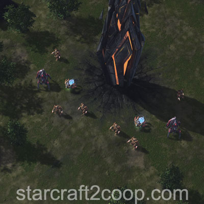
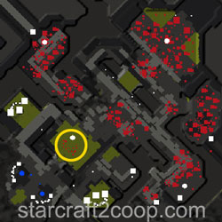
The second set of Void Shards is guarded by a significantly larger enemy force. The defenses are shown below:
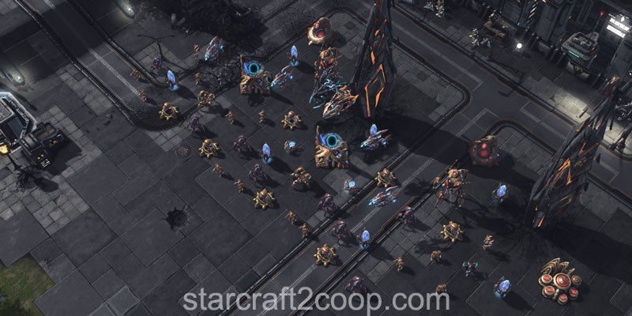
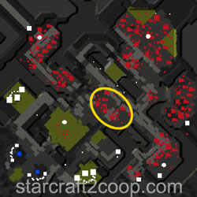
If you choose to attack the third set of Void Shards with a ground army, you will need to push through an enemy camp. Note that air units can completely bypass this camp. The camp is shown below:
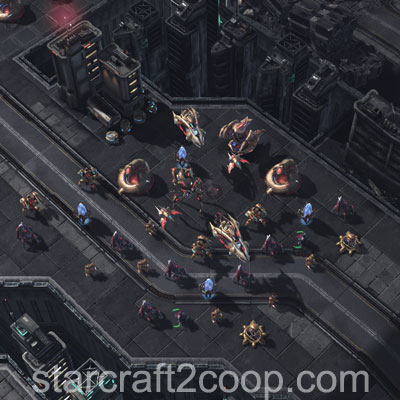
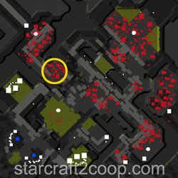
The third set of Void Shards is placed within an enemy base. The base is shown below:
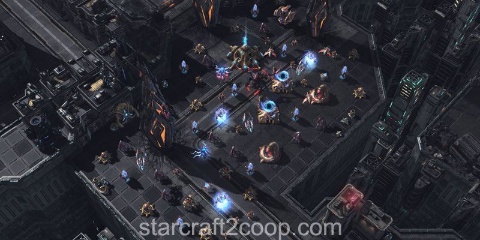
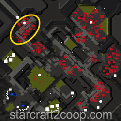
The last set of Void Shards is located within a much larger enemy base. The base also has a small forward comp. All of this is shown below:
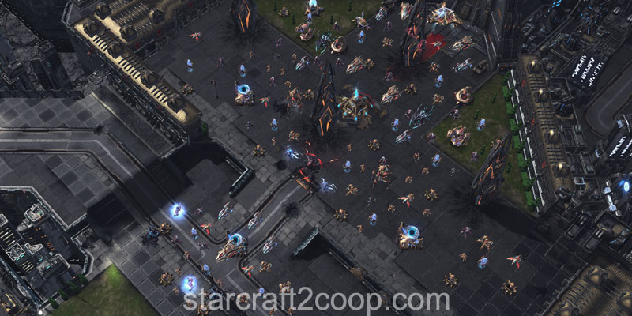
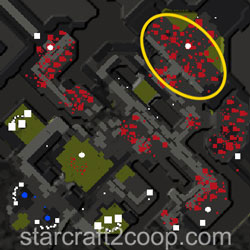
Completing the Bonus Objective
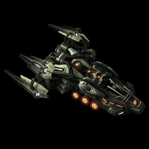
The bonus objective requires you to kill two Pirate Ships that will appear on the minimap. The first one will always spawn in the green-marked location. The second will always spawn in the blue-marked location. The spawn points are shown below:
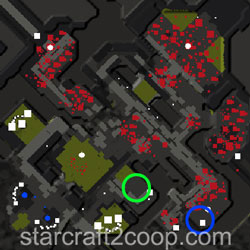
The Pirate Ships have two abilities:
- Shock Blast: This skill disables all non-heroic units hit around the Pirate Ship. Units cannot move, attack, or use skills.
- Bombing Run: Does a large amount of damage in a straight line. This skill can usually kill an entire army if you are not careful.
While the first Pirate Ship spawns unguarded, the second spawns behind an enemy base. The base is shown below:
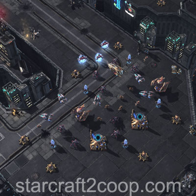
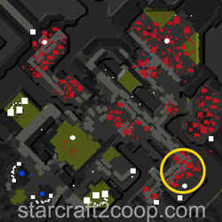
Timings
Note: Information on Tech and Strength levels can be found on the Enemy Compositions page.
The Attack Wave Timings for this mission are:
| Wave | Time | Tech Level | Strength Level | Notes |
|---|---|---|---|---|
| 1 | 2:00 | 1 | 1 | |
| 2 | 5:00 | 2 | 2 | |
| 3 | 8:00 | 3 | 3 | If only one expansion is built, targets that. Otherwise, targets random expansion. |
| 4 | 11:00 | 4 | 4 | |
| 5 | 14:00 | 5 | 5 | Targets the other expansion |
| 6 | 17:00 | 6 | 6 | |
| 7 | 20:30 | 7 | 7 | |
| 8 | 24:30 | 7 | 7 | |
| 9 | 26:30 | 7 | 7 | |
| 10 | 28:30 | 7 | 7 | |
| 11 | 30:00 | 7 | 7 |
The first Pirate Ship will spawn at 11:40.
The second Pirate Ship will spawn when either of these conditions are met:
- The mission time hits 18:50
or
- The last set of Void Shards are active
or
- More than 25% of enemies in the pirate base are dead.
Spawn Points
You can uniquely identify the enemy race at the start of the mission by looking at the creep (for Zerg), or by checking for a Protoss crate present (for Protoss) at Player 1's expansion. This is demonstrated in the video below:
All attack waves have a single spawn point. This spawn point is located on the top of the ramp, just off the base containing the final set of Void Shards. This spawn point is shown below:
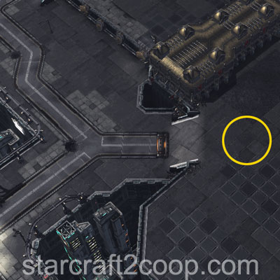
While spawn-camping this point is quite difficult, most attack waves will follow the same path: They will turn left as soon as they get to the bottom of the ramp and will make their way down the narrow funnel leading to the middle of the map. Since the base is outside the path required to be cleared by players, it is usually not done. Note that if you do choose to clear this base, it may force the attack wave to spawn nearer to the back of the base (the edge of the map).
Mission Tips
- Attack waves all spawn from the same location, so defending against them is really easy.
- You can bypass the defenses guarding the last two sets of Void Shards by using air units to go around them.
- The first attack wave on this map is unusually early. It spawns before most heroes are out. Ensure you have adequate defenses to deal with it. Tips are listed in the following section.
Handling the First Attack Wave
The first attack wave on this mission spawns at the 2:00 mark, meaning that most attack waves will reach the main base between 2:35 and 2:50, well before most hero units spawn. The below are some ways commanders can deal with this attack wave:
- Raynor: Rush a Barracks to build a Bunker and fill with four Marines
- Kerrigan: Build a Hatchery at the corner of the ramp and place two Spine Crawlers behind
- Artanis: Zealot warp-in + Orbital Strikes
- Swann: Blaster Billies/Flaming Betties depending on the composition (pre-scout with an SCV)
- Zagara: Free Banelings from Baneling Nest
- Vorazun: Tank with a Gateway then use Shadowguard
- Karax: Orbital Strikes
- Abathur: Toxic Nests
- Alarak: Structure Overcharge
- Nova: Build a chokepoint with a Barracks and Factory, then use a Railgun Turret
- Stukov: Bunker + Infest Structure
- Fenix: Rush your preferred AI Champion (Kaldalis recommended)
- Dehaka: Hero unit
- Han/Horner: Mag-mines
- Tychus: Tank with a structure until Tychus spawns
- Zeratul: Legion calldown
- Stetmann: Build a Hatchery at the corner of the ramp and place two Spine Crawlers behind
- Mengsk: Supply Bunker drop
Commander-specific Tips
- Abathur: Place Toxic Nests on your main's ramp to deal with the early attack wave.
- Abathur: Place Toxic Nests near the exit of the funnel leading to the middle of the map to weaken/destroy attack waves.
- Dehaka: Dakrun can destroy the Pirate Ship as long as he does not get hit by its charge attack.
- Dehaka: One Dakrun can destroy both Pirate Ships if you time it right and charge him across the chasm. The video below shows this in action:
- Han & Horner: Place Mag Mines near the exit of the funnel leading to the middle of the map to weaken/destroy attack waves.
- Mengsk: Drop Troopers (with the upgrade researched) at the top of the ramp between Void Shards set #3 and set #4. Then build Earthsplitters to clear all Void Shards on the map.
- Nova: If you use Siege Tanks, place Spider Mines near the exit of the funnel leading to the middle of the map to weaken/destroy attack waves.
- Raynor: If you use Vultures, place Spider Mines near the exit of the funnel leading to the middle of the map to weaken/destroy attack waves.
- Swann: Concentrated Beam can be used to deal with all the attack waves, and can even wipe it out entirely if placed correctly.